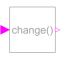

BooleanChangeIndicate Boolean signal changing |

|
Information
This information is part of the Modelica Standard Library maintained by the Modelica Association.
This block is a synchronous version of
Modelica.Blocks.Math.BooleanChange.
It uses previous instead of the implicit pre of
change to set the Boolean output y to
true when the boolean input u changed. Thus, it's
logic is:
if firstTick() then y = false; else y = not (u == previous(u)); end if;
This block might be superfluous and replaced by
Modelica.Blocks.Math.BooleanChange when the semantics
of change are relaxed and well-defined for
clocked discrete-time partitions.
Connectors (2)
| u |
Type: BooleanInput Description: Connector of Boolean input signal. |
|
|---|---|---|
| y |
Type: BooleanOutput Description: Connector of Boolean output signal. |